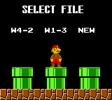
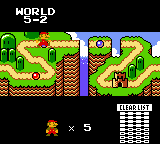
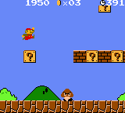
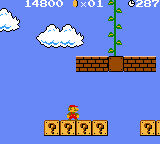
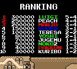
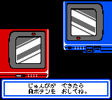
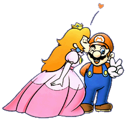

オリジナル１９８５
|
ファミコン版を再現したゲームモードです。 ゲームボーイカラーで遊びやすくするために、いろいろ改良されています。 |
|  |  | ファイルを３つまで、セーブすることができます。 ご家族で、キノコ王国を攻略されてはいかがですか？ キノコ王国のどこにいるかが、一目でわかる綺麗なマップ画面もつきました。 |
| スタートすると、そこはもうあの懐かしいキノコ王国！ キノコ、土管、ブロックの位置は覚えていますか？ 隠しコインや、１ＵＰキノコも、同じところに隠れてます。 これは雲の上のボーナスステージにいくところ。 どこだかわかりますか？ |  |  |
|  |  | ゲームオーバーになると、その時のスコアが記録されます。 ネームエントリーができるので、誰が一番かすぐにわかります。 赤外線通信機能を使えば、ランキングの交換もできます。 友達と、ゲームボーイカラーを持ちよって、交換だ！ |
| オリジナル｜チャレンジ｜VSゲーム｜おまけ |  |
|
|